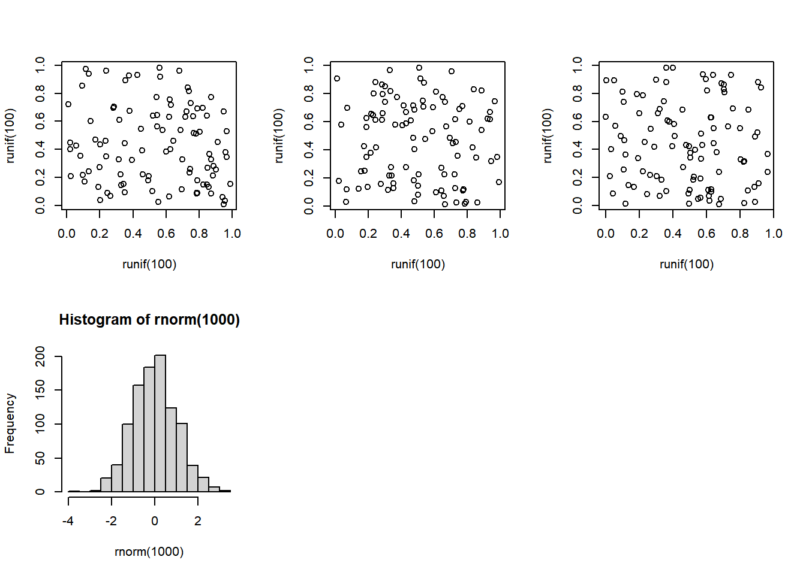
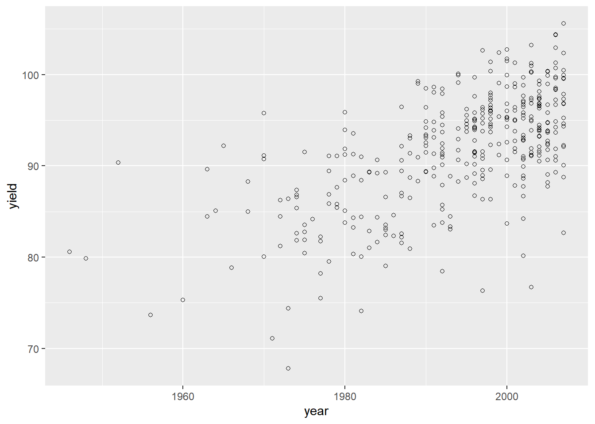
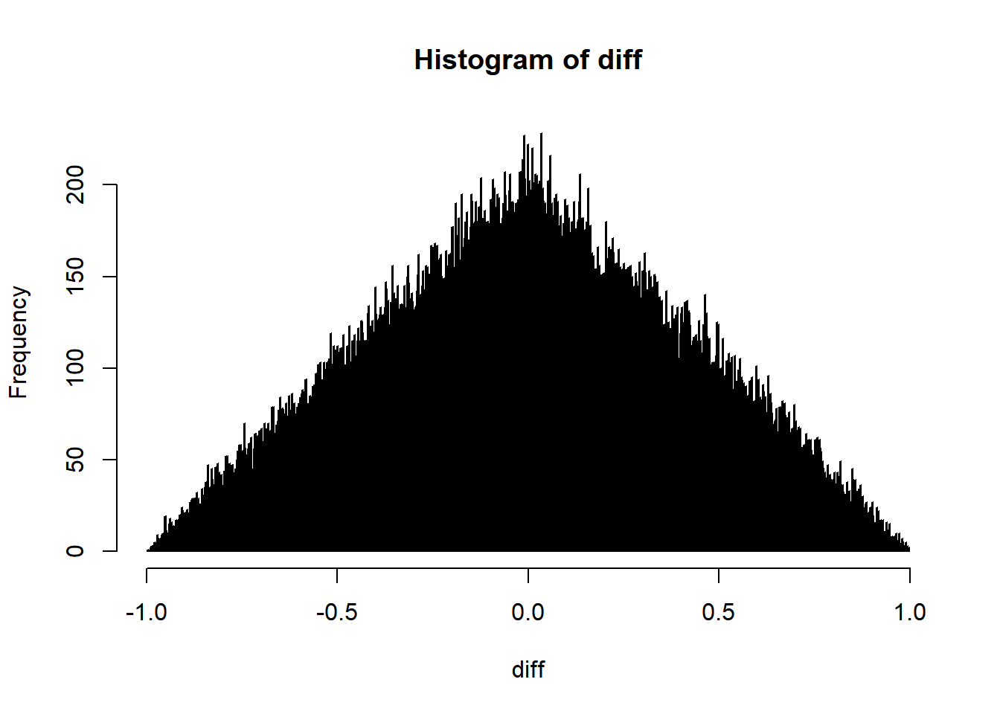

Chapter 4 More useful information
4.0.1 Plotting Graphs
Graphical methods were introduced in context in the sections on summary statistics and on basic statistical analysis. The following methods have been used:
hist() produces a histogram
plot() produces a scatter graph
abline() adds a line of best fit to a scatter graph
boxplot() produces a box-and-whisker plot.
pairs() produces a matrix of scatter plots.
Control of many graphics parameters - font sizes, colours and so on - is given by the command par(). Type help(par) for more details. One useful option is:
par(mfrow=c(x,y))
This will plot graphs successively in a window x graphs wide by y graphs deep. Once the panel of graphs is complete, the next graph will overwrite the whole window and start filling the panel again. For example, the following commands set up a panel two graphs deep by three wide and fills in the first four slots.

As you can see, the graphs need not all be of the same type. The related version of the command par(mfcol=c(x,y)) will produce a graphical window of the same dimensions but fill it in column order rather than in row order.
A benefit of RStudio over native R is that graphs are saved and you can scroll back and forwards over previous efforts and export them, either as files or to the clipboard. In native R, the export of graphs is no more complicated, but they are overwritten so you cannot scroll to inspect previous plots but must recreate them.
Although R generates graphs very quickly and simply, the labeling and formatting are often not ideal. To alter graph titles, include the options:
main="Main title"
sub="subtitle"
xlab="x-label"
ylab="y-label"
For example:
#switch back to plotting a single plot
par(mfrow=c(1,1))
#make plot
plot(year,yield,main="TG panel yields over time",sub="example scatterplot",ylab="yield in quintal / ha",xlab="year first in trial")
We have only used the basic plotting commands which come with the core R package. Very highly rated, and increasingly used is a package called “ggplot2” http://ggplot2.org/. This is generally included as part of the tidyverse too.There is no time go into this in detail. Select ggplot2 from the “Packages” tab in the bottom right window to active the package. If not installed, click on the “Packages” tab in the bottom right window, then click “install” and enter ggplot2 as the package you wish to install. Alternatively, you can run this line: install.packages("ggplot2"), then load the package from your library:
## Warning: package 'ggplot2' was built under R version 4.0.2Then:

aes stands for aesthetics. If you think this look better and is easier, then ggplot2 is for you. See the web site for more details.
There’s plenty more you can do with ggplot2. There are some good cheat sheets available too.
4.1 Probability distributions
In this section we describe how to use R to look up the p-value associated with the most commonly used test statistics and how to look up test statistics associated with p-values.
Firstly the p-value associated with chi-squared:
## [1] 0.05004352The parameters given to pchisq, in order, are: 3.84 value of the test statistic. 1 the degrees of freedom lower.tail If set to T (the default) the result is the cumulative distribution up to the value of the test statistic - 0.95 in the example. For significance testing we require the area of the upper tail: 1-0.95 and so set lower.tail=F.
To calculate a chi squared from a p-value we use the command qchisq:
## [1] 3.841459The syntax is identical to that for pchisq(), so we are required to include lower.tail=F.
Examples for the F distribution are shown below.
## [1] 0.05032099## [1] 3.850775The examples here are for 1 degree of freedom for the numerator and 1000 degrees of freedom for the denominator. The results are identical to those for a chi-squared test with 1 df. In fact, a chi-squared test with n degrees of freedom is identical to an F test with n degrees of freedom in the numerator and a very large number of degrees of freedom (ideally infinite) in the denominator.
Values for probabilities associated with a normal distribution are:
## [1] 0.0249979This probability is for a standardised normal distribution: with a mean of zero and a variance of 1. The probability is for a single tail of the distribution. Generally, we would require the result for a two tailed test - the probability of values higher than 1.96 and lower than -1.96. This probability is just double that for a single tail: 0.05 in this case. Again, this is the same value as for chi-squared with 1 degree of freedom. If a variate has a standardised normal distribution, the variate squared has a chi-squared distribution with 1 degree of freedom: 1.962 = -1.962 = 3..84.
Probabilities associated with normally distributed variables with different means and variances are produced by specifying the mean and variance.
pnorm(q,mean=x,sd=y) with the inverse function: qnorm(p,mean=x,sd=y)
lower.tail=F can be added if required. The values for mean and standard deviation are now user specified (substitute for x and y in pnorm and qnorm). The default values are 0 and 1.
Finally, the t-test:
## [1] 0.02513659## [1] 0.02513659We usually carry out a two sided t test - so we require the sum of the lower and upper tail probabilities: equal to two times the single tailed probability. The inverse function follows the usual format and nomenclature:
## [1] 1.9602014.2 Random number generation
R has excellent random number generators for several distributions:
rnorm(n, mean=0, sd=1)
runif(n, min=0, max=1)
rchisq(n, df, ncp=0)
rt(n, df, ncp)
rf(n, df1, df2, ncp)
and there are others. These are self explanatory except for ‘ncp’. This is the non-centrality parameter. For most use, this will be zero. It is used in power calculations to provide the distribution of the test statistic under an alternative hypothesis. The ‘ncp’ is the value you would get if you plug values of parameters or observations you expect under the alternative hypothesis into the formula for the test. For example, with a t test, the value under the null hypothesis is zero. If you expect the true difference between your means to be three, then this is the ‘ncp’. For a chi-squared test, you would create expected numbers from expected proportions from an alternative hypothesis and calculate a chi-squared value which will be the ‘ncp’ for power calculations.
4.3 Loops: second example
A block of commands, each on a separate line, can be saved in a file and later pasted into R where it will execute (i.e. run as a program). There is, of course, much more to programming in R than this, but this is enough to get you started. The most common requirement is to repeat an operation multiple times. Below is the format for a simple loop which can be easily edited to fit your own purposes.
This code plots the distribution of the difference in value between a pair of uniformly distributed values. It takes a while to run: you may prefer to reduce the number from 100,000. If you cut and paste the code into R you should get something like this:

Note that the beginning and end of the loop (or any R program block) is defined by curly brackets. The indentation isn’t obligatory but is good programming practice. The program creates a vector, “diff” which is then indexed by “i”. If diff wasn’t first created outside the loop, the program would fail.
Loops in R can run slowly. Often, they can be avoided by the use of the command apply():
## Warning in var(if (is.vector(x) || is.factor(x)) x else as.double(x), na.rm =
## na.rm): NAs introduced by coercion
## Warning in var(if (is.vector(x) || is.factor(x)) x else as.double(x), na.rm =
## na.rm): NAs introduced by coercion## variety year ORIGIN Rht2 PpdD1 yield
## NA 11.5105231 NA NA 0.4188383 6.2670999
## CALLOW_2011 FRANCE_2010 FRANCE_2011 LGE_2010 LGE_2011 NIAB_2011
## 7.5343555 7.6016464 8.0943785 6.7535158 7.2916383 5.1220707
## FT HT AWNS
## 3.2931899 7.5069727 NAThe first argument to apply is the dataset or matrix we want to work on, the second is whether we want to loop over rows (1), or columns (2 - as in this example). The third is the function you wish to loop over. So here we loop over columns to calculate the standard deviation of each.
The missing data for Rht2 has caused the standard deviation to be returned as NA. We need to include na.rrn=T as an option. Unfortunately, there is no way I know to do this within apply. Instead we need to define our own function (which also allows us to look at how to define functions in R in general - another useful lesson in learning to program in R).
function(x) defines a set of arguments that our new function sd.na.rm.is.t requires. Here we only need one argument; the name of the dataset, which will be equated to x when we run the function. Following that, on the same line, is the set of commands we want to run. Here we are running an inbuilt function, sd(x,na.rm=T),which will take the data vector x as the source of data.
Try:
sd(AWNS)
sd(AWNS,na.rm=T)
sd.na.rm.is.t(AWNS)
So now:
## Warning in var(if (is.vector(x) || is.factor(x)) x else as.double(x), na.rm =
## na.rm): NAs introduced by coercion
## Warning in var(if (is.vector(x) || is.factor(x)) x else as.double(x), na.rm =
## na.rm): NAs introduced by coercion## variety year ORIGIN Rht2 PpdD1 yield
## NA 11.5105231 NA 0.4981119 0.4188383 6.2670999
## CALLOW_2011 FRANCE_2010 FRANCE_2011 LGE_2010 LGE_2011 NIAB_2011
## 7.5343555 7.6016464 8.0943785 6.7535158 7.2916383 5.1220707
## FT HT AWNS
## 3.2931899 7.5069727 0.2716556This returns the desired standard deviation of each column of data. We still get NA’s and warnings for attempting to calculate the standard deviation for non-numeric data (for Variety name and country of origin). We could specify which columns of TG.data.for.day.1 to work on to avoid this.
apply(TG_data_for_day_1[,-1:-3],2,sd.na.rm.is.t)
The [,-1:-3] informs R that we need all rows but to drop the first three columns.
This is long winded, but functions are frequently longer sequences of commands rather than just one as in our example. The commands for a long function, which will run over many lines are bracketed with { and }, just as in loops using ‘for’.
4.4 Miscellany
Included here are some useful commands which have not so far been described and some less frequently used commands which come in handy from time to time.
attributes(object)
Gives information on the object which is often to help you work out what you’ve done.
cbind(datasetA) and rbind(datasetB)
Joins up two datasets by rows or columns. For example:
## temp variety year ORIGIN
## 1 AARDEN AARDEN 2003 DEU
## 2 AARDVARK AARDVARK 1997 GBR
## 3 ABELE ABELE 1970 GBR
## 4 ABO ABO 1977 FRA
## 5 ACCESS ACCESS 1998 GBRWe have created a subset of the data with two copies of the variety names. I’ve limited this to the first 5 rows to save paper. There is no particular reason we would want to do this, it’s just as a demonstration.
Next, we create two copies of the first three columns of the data using rbind:
temp<-TG_data_for_day_1[,1:3]
temp2<-rbind(temp,TG_data_for_day_1[,1:3])
head(temp2[order(temp2$variety),])## variety year ORIGIN
## 1 AARDEN 2003 DEU
## 377 AARDEN 2003 DEU
## 2 AARDVARK 1997 GBR
## 378 AARDVARK 1997 GBR
## 3 ABELE 1970 GBR
## 379 ABELE 1970 GBRNote, that in ordering the data we have used order(temp2$variety) rather than order(variety) because we require the version of “variety”" associated with the new structure temp2, not the version of variety that we attached earlier.
dim(x)
Retrieve the dimensions of an array or dataset.
## [1] 376 15## [1] 752 3help(command)
This opens a new window and provides help on the command. help(lm) for example, will give help on the linear modelling command that we have used extensively. The help is written in a terse and technical style however, which may be hard to understand at first but you get used to it. It is useful to see what options are available with each command - for many of the commands used in this guide more are available than have been described. Often, sufficient of the output from help makes sense to be able to get a command working by trial and error. At the bottom of the output, there are often examples of the command’s use: again not always easy to follow. In Rstudio, help is available (in the same unhelpful style) directly from the windows.
history(x)
In native R, this opens up a window with a list of the most recently issued x commands. The default number is 25. These can be copied back into the R window and re-executed. The window with the output can be saved from the File menu to keep a record of commands issued during the R session. In RStudio, the history of commands is available directly from a tab in the top right hand window.c
ls() or equivalently objects()
Lists all the variables available in the current R session. This command can also be executed from the menu in native R, selecting first “Misc”, then “List objects”. In RStudio it is displayed using the Environment tab in the top right hand window.
matrix(data, nrow = x,ncol =y)
Defines a matrix and fills it with data. For example:
## [,1] [,2] [,3] [,4]
## [1,] -1.4547725 -0.8788952 1.3855051 -0.5439569
## [2,] -0.6538121 1.2675276 -0.7013855 1.4724045
## [3,] -0.4060148 -0.5898193 0.2879813 1.2272753The rnorm() part has simulated 12 random numbers which have a specified normal distribution.
Note that there is no need to define the column number ; it is fixed by the data and by the row number. More commonly, we would want to name the matrix. By default, all data are initially recorded as missing:
## [,1] [,2] [,3] [,4]
## [1,] NA NA NA NA
## [2,] NA NA NA NA
## [3,] NA NA NA NArep(x,y)
Generates a repeated list:
## [1] 1 2 3 1 2 3 1 2 3 1 2 3## [1] "apples" "pears" "apples" "pears"Remove an object:
Remove those objects that are no longer required.
rm(list=ls(all.names=TRUE)) Would removes all variables, although this can be more easily achieved from the Session tab which offers more options.
Pull row names from a object (and only show first 5):
## [1] "1" "2" "3" "4" "5"Pull column names:
## [1] "variety" "year" "ORIGIN" "Rht2" "PpdD1"
## [6] "yield" "CALLOW_2011" "FRANCE_2010" "FRANCE_2011" "LGE_2010"
## [11] "LGE_2011" "NIAB_2011" "FT" "HT" "AWNS"You can also write new names:
## [1] "a" "b" "c" "4" "5" "6" "7" "8" "9" "10"seq(x)
Generates a sequential list.
`seq(10)` produces a list from 1:10.
`seq(10,12,0.25)` produces a list from 10 to 12 in steps of 1/4sink(filename)
Sends output to the given file rather than to the console. sink() with no filename will turn off the previous redirection, Useful if you are expecting lots of output. You can issue this before the command and then turn it off when the command has completed.
source(filename)
Runs commands from the filename - given as a variable containing the name or as the name itself in quotes.
split(x,y)
Partitions a variable or whole dataframe (x) into separate variables or dataframes on the basis of matches to y. Give this a go using:
split(yield,ORIGIN) [1:2]
In my hands, the following convoluted code will split our data into three separate data frames.
DEU<-data.frame(split(TG_data_for_day_1,ORIGIN)[1])
FRA<-data.frame(split(TG_data_for_day_1, ORIGIN)[2])
UK<-data.frame(split(TG_data_for_day_1, ORIGIN)[3])
dim(DEU)## [1] 89 15## [1] 212 15## [1] 73 15## [1] 376 15The row numbers don’t add up because for some countries the origin was NA.
4.4.1 Learn more
Much useful information and documentation is available on the R web site: http://www.r-project.org/, including the R manual “An Introduction to R.”
Note, the manuals, including “An introduction to R”, are available directly from the Help menu from with R.
The book Introductory Statistics with R, Springer, 2002, ISBN 0-387-95475-9 is an excellent introduction both to R and to statistical analysis, with many simple examples.
R in a Nutshell, by Joseph Adler in the Nutshell series from O’Reilly gives a lot of detail about what and how R does what it does. An excellent reference book, but not for beginners.
4.4.2 Packages
Many are available from the Comprehensive R Archive network (CRAN) web site http://cran.r-project.org/. They can be installed directly from this site, or downloaded as zip files and installed later (useful if you need to install onto multiple machines). We shall be using several of these later.
These packages generally come with their own manual, often detailed. That for the R/QTL package, for example, runs to 96 pages. Although the CRAN website is the first place to search for suitable packages, they are also found elsewhere and are often referred to in methodological publications or the methods sections of paper: programming in R is an expanding industry. The more popular packages (R/QTL again) may have books published about them and often course material and lecture notes can be found on the web.
It is worth reiterating that our guide to the syntax and structures used in R has been very superficial. We have mentioned the data frame and little else. Knowledge of other structures - arrays, matrices, lists - should be acquired at some stage. They are explained in “An Introduction to R” but this book is not a page turner.
4.4.3 R commander http://www.rcommander.com/
For basic statistical analyses, and if you want to avoid typing or working on the command line, consider this package, which converts R into point-and-click statistical package just like all the others. You can download an introductory guide here: http://cran.r-project.org/doc/contrib/Karp-Rcommander-intro.pdf
4.4.4 The Tidyverse
If you are new to R, it is worth putting the effort into learning about this. The website is: https://www.tidyverse.org/. The book “R for Data Science”, which is free online from this website is a very good introduction, including to ggplot.
4.4.5 Other resources
For the “Understanding data types and R objects” section in this tutorial, inspiration was taken from www.datacarpentry.org/R-ecology-lesson. This is an excellent resource and worth checking out. Additionally, formal definitions were taken from the book “R in Action: Data Analysis and Graphics with R” by Robert Kabacoff.
4.5 List of commands, mainly described in this guide.
4.5.0.1 General
apply = fast way of looping over rows and columns
attach = attaches a dataset to R for subsequent analyses
attributes = get information on the attributes of an object
cbind = concatenate two tables or vectors by columns
colnames = adds column names to a table or reads them from a table
detach = attaches a dataset to R for subsequent analyses
demo = demonstration a command (not available for most commands)
dim = retrieve the dimensions of an object
factor = convert a variable or text into a factor
for = loop over a a set of commands with different input values
function = define a function which can then be run repeatedly
getwd = returns the path to the working directory
help = returns help on a command
history = lists previously issued commands
install.packages = select a package to install
is.na = returns TRUE if a value is NA.
length = returns the number of entries in a variate
ls = lists all active data structures and variates
matrix = defines a matrix and fills it with data.
order = returns the order or a variate for use in a subsequent sort
quit = exit R
rbind = concatenate two tables or vectors by rows
read.csv = reads in data from .csv file
read.table = reads in data
rep = generates a list with repeating elements
rm = delete data structures and variates from R
rownames = adds row names to a table or reads them from a table
searchpaths = lists attached packages and datasets in the order in which
searched.
seq = creates a sequence of values
sink = writes output to a file
sort = sorts data
source = reads commands from a file
split = splits data on a factor value
subset = selects a subset of data for subsequent analysis
table = defines a table: used for input into contingency chi sq tests.
4.5.0.2 Graphical
abline = add the best fitting straight line to a scattergram
boxplot = produce a Box-and-whisker plot
heatmap = plots a heatmap and dendogram
curve = add a function to a graph
hist = plot a histogram
image = colours-in a matrix according to its values.
pairs = plot multiple scattergrams in a matrix format
par = set graphical parameters
pdf = writes graphical output to a pdf file
plot = produce a scattergram
4.5.0.3 Statistics
anova = return an anova table from a linear model
apply = applies a function to rows and/or columns of a matrix
chisq.test = carry out a contingency chi-squared test
colMeans = returns means across columns of a dataset
colSums = returns totals across columns of a dataset
fisher.test = carry out a Fisher’s exact test
cor = returns the correlation coefficient
fitted = returns the fitted values from a linear model
lm = define and execute a linear model
mean = returns the mean of a variate
median = returns the median of a variate
minimum = returns the minimum of a variate
maximum = returns the maximum of a variate
pchisq = returns the p-value of a chi-squared statistic
pnorm = returns the p-value for a normally distributed variate
pt = returns the p-value of a t-test
qchisq = returns a chi-squared statistic for a given probability
pf = returns the p-value of a F (variance ratio) statistic
qnorm = returns a normality distributed variate for a given probability
quantile = returns the quantiles of a variate
qf = returns a F (variance ratio) statistic for a given probability
qt = returns the t-test statistic for a given probability
sd = returns the standard deviation of a variate
sum = returns the sum of a variate
summary = summarise data
resid = returns the residuals from a linear model
rchisq = returns random numbers from the chisq distribution
rf = returns random numbers from the F distribution
rnorm = returns random numbers from the normal distribution
rowMeans = returns means across rows of a dataset
rowSums = returns totals across rows of a dataset
runif = returns random numbers from the uniform distribution
rt = returns random numbers from the t distribution
t.test = one and two sample t-test
var = returns the mean of a variate
var.test = compare two variances by an F test
Bentley, Alison R, Marco Scutari, Nicolas Gosman, Sebastien Faure, Felicity Bedford, Phil Howell, James Cockram, et al. 2014. “Applying association mapping and genomic selection to the dissection of key traits in elite European wheat.” Theoretical and Applied Genetics 127 (12): 2619–33. https://doi.org/10.1007/s00122-014-2403-y.
Xie, Yihui. 2015. Dynamic Documents with R and Knitr. 2nd ed. Boca Raton, Florida: Chapman; Hall/CRC. http://yihui.name/knitr/.
———. 2020. Bookdown: Authoring Books and Technical Documents with R Markdown. https://CRAN.R-project.org/package=bookdown.